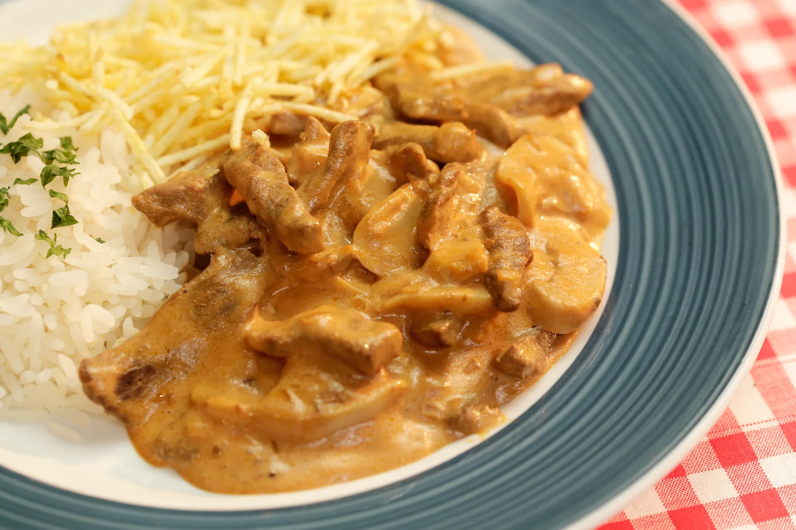

receitas
O strogonoff de frango é um prato amado por todos e muito fácil de ser preparado! Que tal aprender como fazer essa delícia aí na sua casa? Essa receita de strogonoff de frango é tão simples que vai te surpreender!
3 peitos de frango cortados em cubos
alho
1 dente de alho picado
sal
sal a gosto
pimenta-do-reino
pimenta-do-reino a gosto
cebola
1 cebola picada
maionese
2 colheres (sopa) de maionese
manteiga
1 colher de manteiga
ketchup
1/2 copo de ketchup
mostarda
1/3 copo de mostarda
cogumelo
1 copo de cogumelos
creme de leite
1 copo de creme de leite
batata palha
batata palha a gosto
Modo de preparo:
.Em uma panela, misture o frango, o alho, a maionese, o sal e a pimenta.
.Em uma frigideira grande, derreta a manteiga e doure a cebola.
.Junte o frango temperado até que esteja dourado.
.Adicione os cogumelos, o ketchup e a mostarda.
.Incorpore o creme de leite e retire do fogo antes de ferver.
.Sirva com arroz branco e batata palha.
